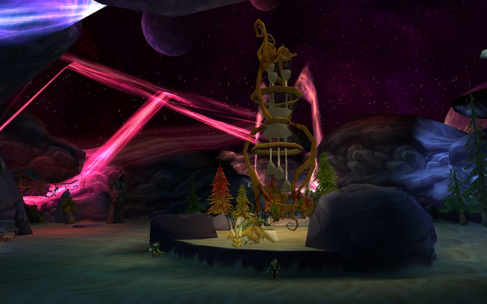
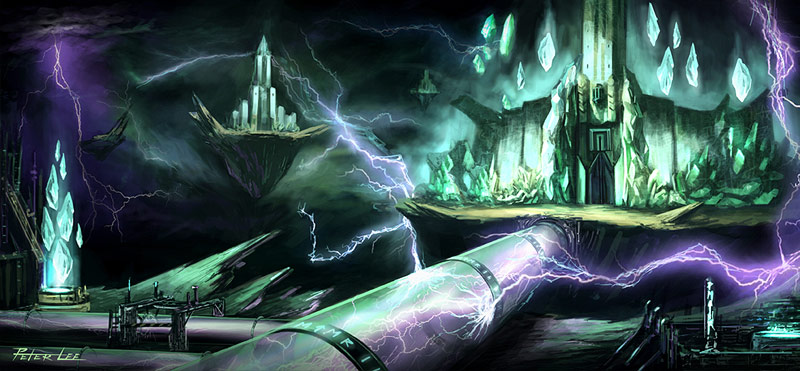

L'expedition Cénarienne est un groupe d'explorateurs partis en Outreterre sur ordre du Cercle Cénarien, dans le but d'étudier les formes de vies de l'Outreterre.
Pour gagner en réputation auprès de l'Expedition Cenarienne, il vous faudra pénétrer dans les donjons du réservoir de Glisseroc : L'Enclos aux Esclaves, La Basse Tourbière et le Caveau de la Vapeur.
Chaque ennemi vaincu dans chacun de ses donjons vous confèrera des points de réputations envers l'Expedition Cénarienne. (Environ 2500 par donjon)
Une fois Exalté, vous pourrez acheter une Monture : L'hyppogriffe de guerre Cénarien.
L'intérieur du Réservoir de Glisseroc
Le Consortium
Le Consortium est dirigé par le prince-nexus Haramad. C'est un cartel de contrebandiers, de négociants et de voleurs éthériens, venus en Outreterre pour tirer profit de ses richesses.
Pour gagner en réputation auprès du Consortium, il vous faudra pénétrer dans le Donjon Tombes-Mana.
Chaque ennemi vaincu dans ce donjon vous confèrera des points de réputations envers le Consortium. (Environ 2500 par donjon)
Un Etherien
Les Gardiens du Temps
Les Gardiens du Temps sont des Dragons de Bronze désignés par Nozdormu pour veiller sur le Grottes du Temps.
Pour gagner en réputation auprès des Gardiens du temps, il vous faudra pénétrer dans les donjons du réservoir de la grotte du temps : L'évasion de Fort-de-Durn et Le Noir Marécage.
Chaque ennemi vaincu dans chacun de ses donjons vous confèrera des points de réputations envers les Gardiens du Temps. (Environ 2500 par donjon)
 L'intérieur des Grottes du Temps
La Ville Basse
Divers habitants, de toutes races, de Shattrath vivent dans la partie basse de Shattrath. Ensembles, ils s'entraident et forment la Ville Basse.
Pour gagner en réputation auprès de la Ville Basse, il vous faudra pénétrer dans les donjons d'Auchindoun : Les Salles de Sethekk, Le labyrinthe des Ombres et Les cryptes Auchenaï.
Chaque ennemi vaincu dans chacun de ses donjons vous confèrera des points de réputations envers la Ville Basse. (Environ 2500 par donjon)
La carte de Shattrath
Les Sha'Tar
Les Sha'Tar sont les Naarus ayant repris la ville de Shattrath à Illidan. Depuis Shattrath, avec l'aide des Clairvoyants et de l'Aldor, ils dirigent la lutte contre la Légion Ardente et le Seigneur Illidan
Pour gagner en réputation auprès des Sha'Tar, il vous faudra pénétrer dans les donjons du Donjon de la Tempete : La Botanica, L'Arcatraz et Le Méchanar.
Chaque ennemi vaincu dans chacun de ses donjons vous confèrera des points de réputations envers les Sha'Tar. (Environ 2500 par donjon)
 Le Donjon de la Tempete
L'Opération Soleil Brisé
L'Opération Soleil brisé est le groupement d'Elfes de Sang et de Draenei soucieux de proteger l'Ile de Quel'danas et le puits de Soleil de la menace que Représente la Légion Ardente.
Pour gagner en réputation auprès de L'Opération Soleil Brisé, il vous faudra pénétrer dans la Terasse des Magistères.
Chaque ennemi vaincu dans ce donjon vous confèrera des points de réputations envers l'Opération Soleil Brisé. (Environ 2500 par donjon)
L'Ile de Quel'Danas regorge également de quetes journalieres augmentant votre réputation auprès de L'Opération Soleil Brisé